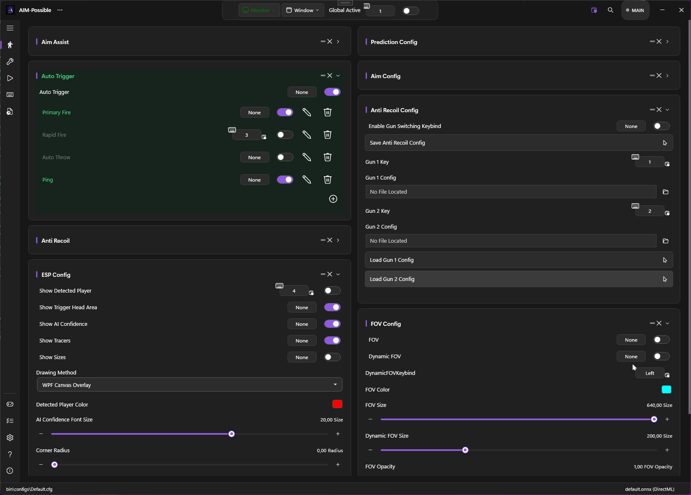
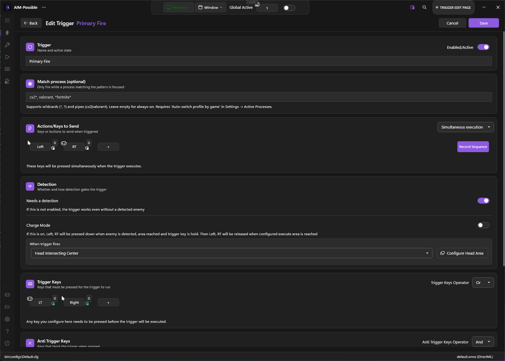
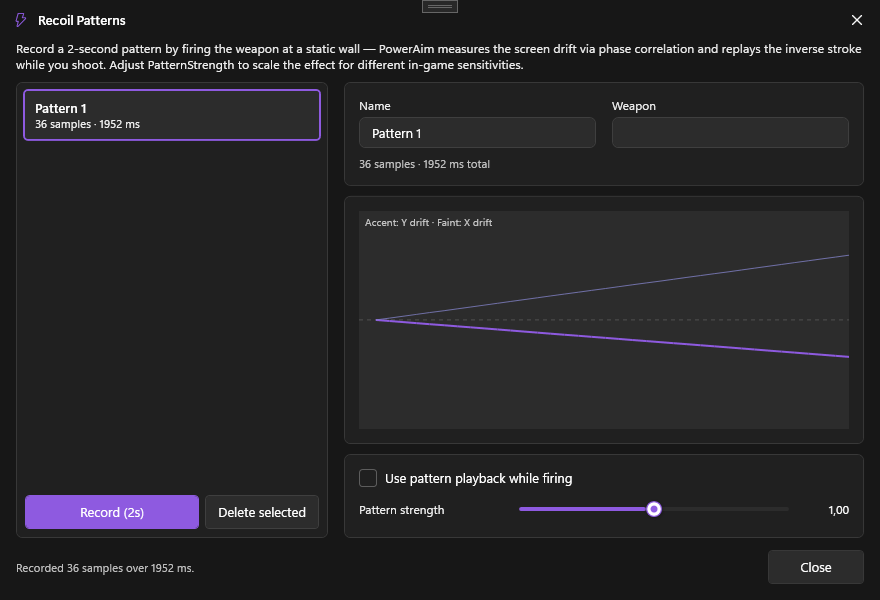
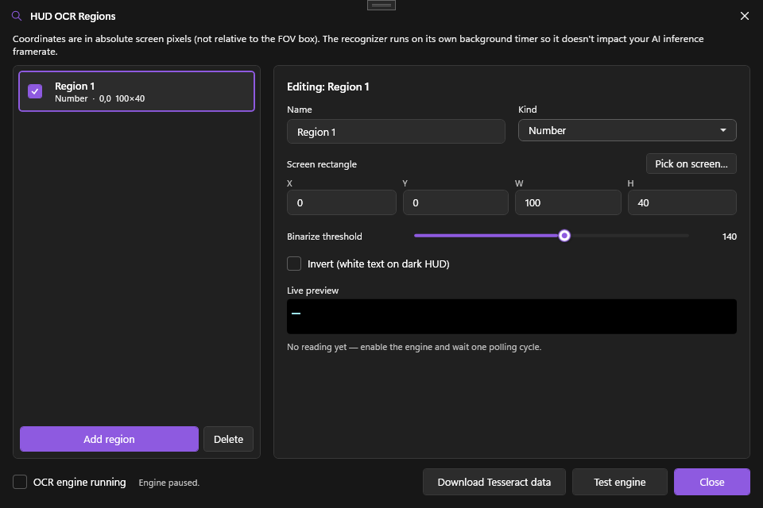
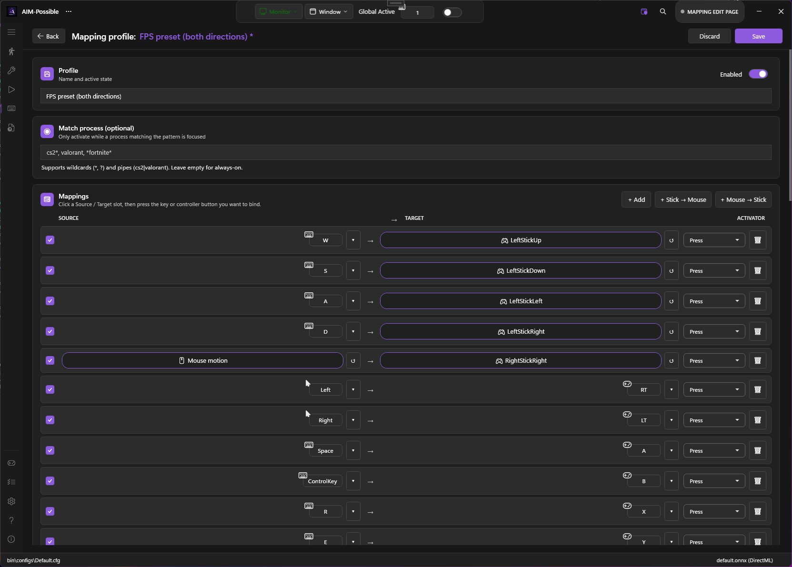
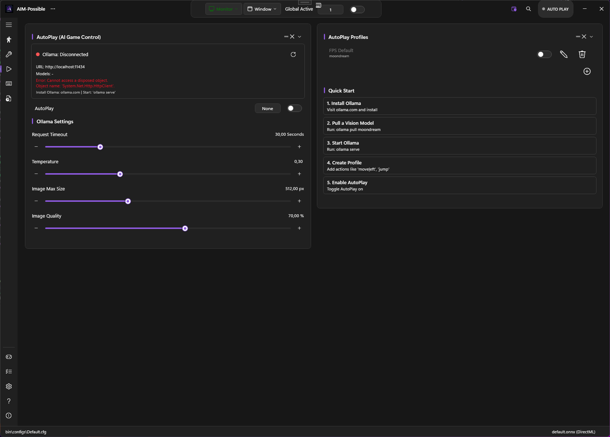
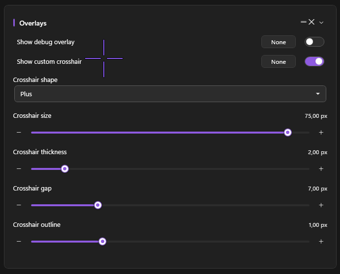
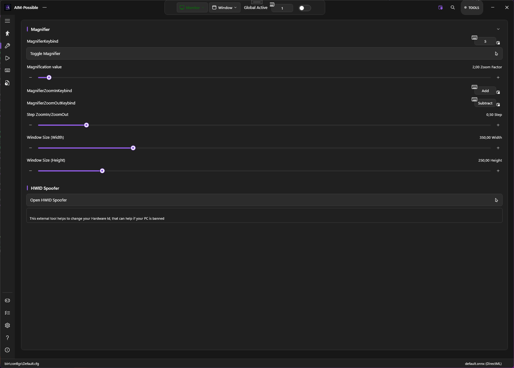

Everything PowerAim does.
A walk through the app: aiming, triggers, anti-recoil, OCR, gamepad support, AutoPlay with a local LLM and the overlays. Each section links to its full guide.
Almost everything in PowerAim can go on a key.
Any binding can be a combination of keyboard, mouse and gamepad buttons, for example Ctrl + Q + Gamepad LT. You can bind a toggle, an aim, trigger or mapping profile, a custom tool or a whole config. Put these together and one key sets up everything you use in a particular game.
- Combinations on any device: hold the keys and let go to record them. The bind only fires while every part is held.
- Toggle anything: every toggle, profile and tool has its own hotkey chip. Click it and press the key or combination you want.
- Workflows: one key combination can load a config, and that config brings its own tools, triggers and profiles with it.
Aim & tracking
A YOLOv8 model finds targets in every frame, and your aim profile decides how the mouse moves toward them. Movement is calibrated to your real sensitivity, so a profile feels the same in every game.
- Several profiles at once: all aim settings live on a profile. More than one can be active, each with its own aim key and an optional OCR condition.
- Calibrated movement: by default it picks the nearest target and moves in proportion to the distance. The step size comes from the measured screen pixels per mouse count, so it doesn't depend on the game.
- Choice of smoothing: None, EMA, or an adaptive 1€ filter that stays calm on slow targets and still reacts quickly on flicks.
- Optional tracking & prediction: per profile you can turn on SORT-style tracking, frame coasting (keeps following a target for a few frames when a detection drops out), switch hysteresis and lead/prediction.
- Aim region & random point: draw the part of the target to aim at, for example the head. It can also pick a random point inside that area.

Conditional triggers
A trigger clicks, or presses any key sequence you set, as soon as a target is under the crosshair. You decide under which conditions it may fire.
- Head-area check: it only fires when the crosshair is inside an area you draw on the detected body.
- OCR conditions: combine values read from the HUD with AND/OR, for example (ammo > 5 OR mag = full) AND weapon contains "AK".
- Multiple triggers, each with its own keys, key sequences, delays, cooldowns and the programs it applies to.

Anti-recoil profiles
Anti-recoil pulls your aim back down while you spray. A profile turns on with a hotkey, or switches automatically based on the weapon you're holding.
- Recorded patterns: record a weapon's actual recoil and play it back. Patterns can loop for long sprays.
- Image-based compensation: compares frames (phase correlation) to see how far the view kicked, and pulls it back down.
- Activation per profile: bind a key, or let OCR read the weapon name and switch the profile for you.

OCR HUD reader
PowerAim can read numbers and text from your HUD, such as ammo, health or the weapon name, and other features can react to them.
- Region types: mark an area as Number, Health or Text. Color-aware preprocessing helps with stylized or colored HUD fonts.
- Used across the app: block a trigger, pause aim while the knife is out or you aren't scoped in, or switch aim and recoil profiles automatically.
- Condition trees built with the same AND/OR editor as the triggers.

Gamepad aim & mapping
Controller support works both ways. You can play controller games with a mouse, or keyboard-only games with a controller.
- Aim through a virtual stick: PowerAim can send its aim to a virtual Xbox controller created with ViGEm.
- Mapping in both directions: map a controller to keyboard and mouse or the other way round, with hotkeys per profile, presets and live diagrams of the controller and keyboard.
- Controller overview: all physical controllers and the virtual one in one list, with slot, sync source and a hide option. One click makes games use the virtual pad.
- Gamepad tester: a live view of the buttons and sticks of any controller, so you can tell what PowerAim sends apart from your own input.

AutoPlay with a local LLM
An experimental feature. It sends the current game state to a language model running on your PC and lets the model decide what to do.
- Game state: detections and OCR readings are summarized and passed to a local Ollama model.
- Profiles & actions: you define which actions it may take, with cooldowns and an action history.
- Learning mode: records what worked and feeds it back to the model. All of it runs on your machine.

Crosshair, FOV & ESP overlays
Optional layers drawn over the game. They show what the model detects and help you set the field of view.
- Crosshair & FOV: a crosshair you can configure and a FOV circle. The circle also sets how much of the screen gets scanned.
- ESP / detected players: draws detection boxes, confidence values and the trigger head area. Several drawing backends are available.
- Debug overlay: shows the mouse and stick movements PowerAim generates as they happen.

Dynamic tools
The Tools page is a list of cards you can expand. It holds the built-in Magnifier and HWID spoofer and any tool you build yourself. Each tool has a start key and a start button.
- Action sequences: chain steps like move mouse, click, send keys, run a program and wait. They run once each time you start the tool.
- Options as variables: define options with a type and use them in any action field as
{name}. You can change them on the card before running. - Send keys like triggers: the same multi-key control the triggers use, with sequence recording and Sequential or Simultaneous mode.
- Hotkey per tool: start a tool by key or button. Pressing it again cancels the run, releases anything it was holding and starts over.

Everything else
The smaller features, grouped by area.
Aim profiles
Save complete aim setups and switch between them by hotkey, or automatically when OCR recognizes a weapon.
features/aim-assist →Aim region picker
Draw the part of a target you want to aim at. It's the same editor the triggers use.
features/aim-assist →Random aim point
Aims at a random point inside that region for each engagement, so it doesn't always land on the same spot.
features/aim-assist →Aim-disengage rules
Pauses aim while an OCR condition is true, for example knife out, not scoped in or low ammo.
features/ocr →Target classes
If a model detects more than one class, choose which classes count as targets.
features/triggers →Detection masks
Black out parts of the HUD, like the minimap or kill feed, so the model doesn't pick up false targets there.
features/detection-masks →Detection area
Pick the target closest to the crosshair or closest to the mouse, and set a minimum confidence.
configuration →Prediction methods
Optional motion prediction (Kalman, Shalloe or WiseTheFox) to lead moving targets.
features/aim-assist →Aim presets
Start from a built-in preset (smooth tracking, snappy flick, high-DPI precise, humanized or legacy) and adjust from there.
features/aim-assist →Tunable tracking
All tracker settings are adjustable: association IoU, alpha/beta gains, switch margin, target max age and an on-target deadzone.
features/aim-assist →Adaptive lead-time
Leads the shot based on target speed. An optional Kalman lead grows the faster the target moves.
features/aim-assist →Multiple active profiles
Several aim profiles can be active at the same time. Each one engages while its own aim key is held, with an optional OCR condition.
features/aim-assist →Smoothing modes
Per profile: None, EMA, or an adaptive 1€ filter where you can set min-cutoff and beta.
features/aim-assist →Calibrated sensitivity
The calibration wizard measures how far one mouse count moves on screen, so a profile feels the same in every game.
features/calibration-wizard →Charge-up triggers
In hold-to-charge mode the trigger presses and holds, then releases once the target lines up. Meant for bows and charged shots.
features/triggers →AND/OR trigger keys
Combine several trigger keys and block keys, with AND or OR per set.
features/triggers →Two-stage intersection
Separate checks for starting and firing. A rough line-up starts the trigger, and it only fires once the head is centered.
features/triggers →Fire-except conditions
A second condition tree that stops firing whenever the HUD shows something like reloading, downed or an open menu.
features/triggers →Disable-recoil hotkey
A separate key turns anti-recoil off mid-fight without opening the app.
features/anti-recoil →OCR recognition tuning
Optional extra steps for hard-to-read HUDs: color-channel grayscale, fixing letters misread as digits, strict parsing, Otsu threshold, a DPI hint and keeping the last valid value.
features/ocr →Per-region OCR setup
Set each region to text, number or health, adjust the black-and-white threshold or invert it, and select the area directly on screen.
features/ocr →Bundled OCR engine
Tesseract is included. It downloads its language data automatically and has a test button.
features/ocr →FOV & dynamic FOV
A field-of-view circle that also sets the size of the scanned area, plus a dynamic FOV on a hold key and a custom color.
features/fov-overlay →Crosshair overlay
A crosshair drawn on screen that you can configure, separate from the game's own.
features/crosshair-overlay →ESP / detected players
Draws detection boxes, confidence and the trigger head area using one of several drawing backends.
features/crosshair-overlay →Crosshair styles
Six crosshair shapes with size, thickness, gap and outline settings. The crosshair can also flash a color when a target appears.
features/crosshair-overlay →ESP detail
Turn confidence labels and tracer lines on or off, change box sizes and pick the color for detected players.
features/crosshair-overlay →Overlay backends
Choose how overlays are drawn: WPF, DrawingContext, desktop DC or a separate overlay window. Use whichever works best with your game.
features/crosshair-overlay →Mouse input methods
Several ways to send mouse input, plus driver-based options for Razer, Logitech G HUB and ddxoft.
features/mouse-input-methods →Movement paths
Cursor paths for more natural-looking movement: Lerp, Exponential, Bézier, Adaptive and Perlin noise.
features/mouse-input-methods →Mouse jitter
Adds optional random jitter to the generated mouse movement so it looks less mechanical.
features/mouse-input-methods →Gamepad aim output
Sends aim to a virtual Xbox controller through ViGEm, for games you play with a controller.
features/gamepad-aim →Hidden controllers
Hides your physical controller from the game with HidHide while PowerAim controls the virtual one.
features/hidden-controllers →Recoil pattern recorder
Records a weapon's real recoil as a pattern you can reuse for anti-recoil.
features/recoil-patterns →Humanized fire delay
Adds random variation to auto-fire click timing so shots don't come at perfectly even intervals.
features/triggers →Driver auto-install
Installs the helpers it can use with one click: Razer, Logitech G HUB and ddxoft mouse drivers, plus vJoy and HidHide.
features/mouse-input-methods →Gamepad backends
Uses ViGEm (Xbox) by default. vJoy, XInput and an internal mode are also available.
features/gamepad-aim →Activators & layers
Each mapping can trigger on press, long press, double tap, toggle or pulse. An optional modifier button gives you a second layer, like Shift on a keyboard.
features/controller-mapping →Stick-feel tuning
Per profile: deadzone, anti-deadzone, response curve, stick-to-mouse exponent, Y-invert and two separate sensitivities.
features/controller-mapping →Mapping presets
Ready-made layouts: FPS in either direction, driving, and a mode that uses the controller as a mouse for accessibility.
features/controller-mapping →Gamepad diagnostics
A live panel shows the XInput slot map and sender status, can send a test trigger pulse and opens the full tester.
features/gamepad-aim →Trigger thresholds
Set how far the analog triggers must travel before LT/RT count as pressed.
features/controller-mapping →Controller overview
All physical controllers and the virtual one in one list, with slot, sync source and a hide option. One click makes games use the virtual pad.
features/controller-overview →Gamepad tester source
Point the live tester at any controller to compare what PowerAim sends on the virtual pad with your own input on the physical one.
features/gamepad-aim →Custom tools
Build tools from steps like move, click, send key, run program and wait, with option variables. Each tool gets a start key.
features/dynamic-tools →Combo keybinds
Bind key combinations across keyboard, mouse and gamepad, such as Ctrl+Shift+X, Ctrl+Left-Click or X+B. The combination is recorded when you let go.
configuration/keybinds-hotkeys →Quick Config
A small floating tab that shows the active config. You can switch configs there or with a hotkey per config, without opening the main window.
configuration/quick-config →Magnifier & HWID
The two built-in tools sit in the same list as your own, each with a start key, a button and its own panel.
features/dynamic-tools →Capture backends
Fast DXGI Desktop Duplication that falls back to GDI automatically, plus capture of a single process.
configuration →Monitor & source select
Choose which monitor or window to capture, with a live preview.
configuration →Downloadable models
Browse community ONNX models and download them from inside the app.
getting-started →Dynamic model sizes
Run dynamic-axis models at sizes from 160 to 640 and up. Smaller is faster, larger is more accurate.
getting-started →GPU device selection
Run detection on a GPU of your choice, for example one the game isn't using.
configuration →Benchmark & FPS cap
A built-in benchmark, and an FPS cap for detection so it doesn't take more GPU time than you want.
features/session-stats →Replay buffer
Keeps the last few seconds in memory so you can save a moment to disk after it happened.
features/replay-buffer →Session stats
Live FPS, inference time and detection counters while you play.
features/session-stats →Training-data capture
Saves frames and YOLO labels while you play, as a starting point for your own dataset.
models/training-your-own →Model input override
Set your own input resolution for dynamic-shape models. Lower is faster, higher is more accurate.
requirements →In-app build switch
Switch between the DirectML and CUDA builds from inside the app. It downloads the other build and swaps it in for you.
requirements →Per-game auto profiles
Switches aim, recoil and mapping profiles automatically based on which program is in focus.
configuration/per-game-profiles →Auto-pause
Pauses everything when the game loses focus and resumes when you switch back.
configuration →Configs
Save, load and download configs. Switch your whole setup to another game's in one click.
configuration/config-file →Keybinds & hotkeys
Global hotkeys for every toggle, profile and tool. All of them can be rebound.
configuration/keybinds-hotkeys →Hide UI from capture
The PowerAim window doesn't show up in screenshots or recordings.
configuration →Theme & accent color
Light or dark theme with your own accent color, and a second accent color while PowerAim is globally active.
configuration →Setup wizard
Walks you through models, capture and keybinds the first time you start the app.
getting-started →9 languages
Translated into English, German, Spanish, French, Italian, Russian, Turkish, Ukrainian and Chinese.
advanced/localization →100% local & free
It doesn't collect telemetry and has no license keys or paid tiers. The source is available, and it's free for non-commercial use.
license & credits →Custom layout
Drag the settings cards into any order and hide the ones you don't need. A small pill brings hidden cards back.
configuration →Instant search
Ctrl+F searches all settings and sections, then scrolls to the matching control and highlights it.
configuration →Hotkey safeguards
You can make hotkeys work only while Global Active is on, and get an on-screen notice whenever a key changes a toggle.
configuration/keybinds-hotkeys →Smart launcher
The launcher starts the app under a random executable name each time.
getting-started/installation →Installer mode
If no build is installed yet, the launcher works as an installer: choose a version, opt into the CUDA build and pick a folder.
getting-started/installation →Built-in updater
Checks for new releases and updates in place. Your configs are kept.
getting-started/installation →Releases & download stats
The About page lists every GitHub release with download counts for each file.
getting-started →Try PowerAim
Download the installer or the portable build and follow the quick-start guide. It's free and everything runs on your own PC.